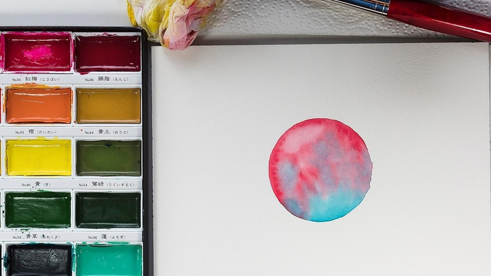
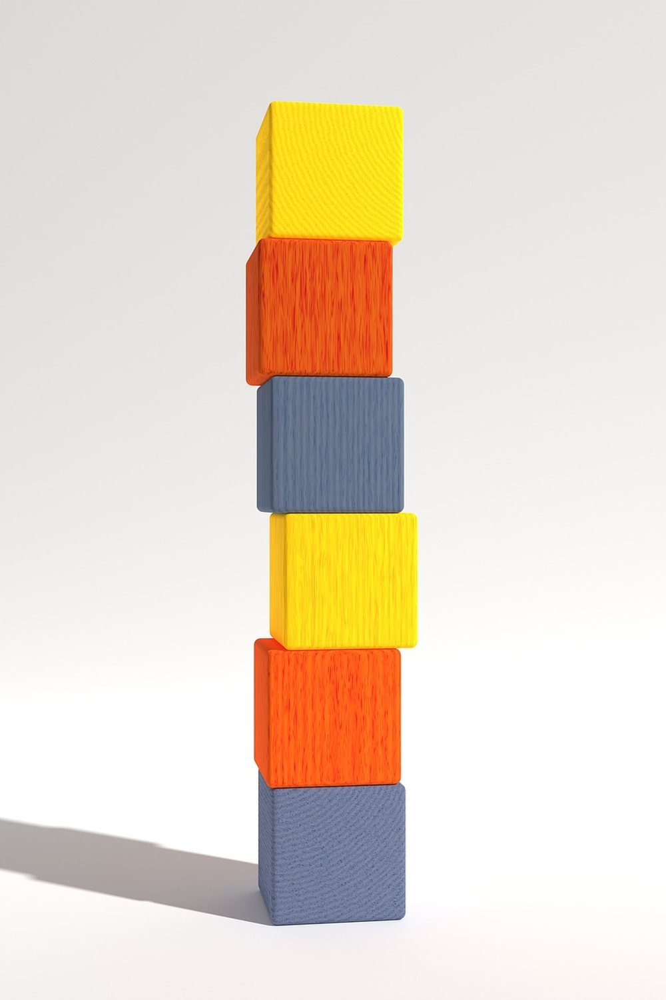
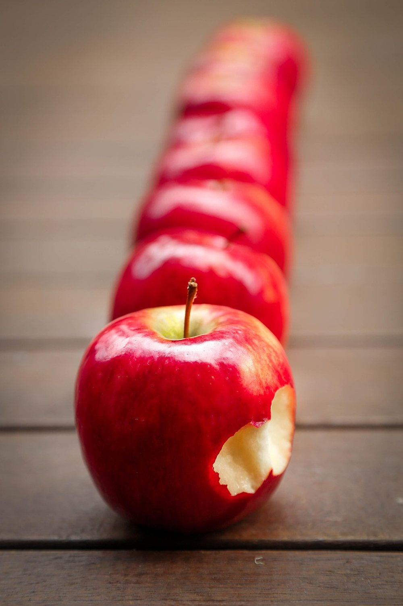

November 9, 2026 · By Pixel Punk Studio
Kids come home from school tired, hungry and full of other people's noise. The tablet looks like the easiest way to switch off, and saying no turns into a negotiation every single day. The trick is not a long list of crafts: it is a few short, calm activities that are already set up, that a child can start alone, and that last about as long as it takes you to make a snack and unpack the school bag.
Why the after-school hour is so hard
After six hours of listening and following rules, most children need quiet more than entertainment. Screens give that quiet instantly, so the alternative has to be just as easy to begin. That means no setup, no rules to explain and nothing that can go wrong. Fifteen minutes is the right length: long enough to calm down, short enough to finish before dinner or homework.
7 calm 15-minute activities
- One coloring page, not a whole book. A single page with one big animal is finished in fifteen minutes, which feels good.
- A kids' word search with short words in big letters. Children ages 6 to 10 can solve one alone, and younger ones can hunt for single letters.
- Building blocks or a small construction challenge: the tallest tower from 20 blocks, or a bridge between two books.
- Draw today. A sheet folded in four: lunch, recess, something funny, something hard. It often starts a conversation better than "how was school?".
- An audiobook or a story podcast on the sofa with a blanket, no screen in sight.
- Play dough or clay: quiet hands, busy mind.
- A short outdoor job: watering plants, feeding the birds, collecting leaves for a collage.

Make it easy to say yes
- Keep a calm basket ready with crayons, a few printed pages and a puzzle, in the same spot every day.
- Snack first: a hungry child argues about everything.
- Offer two choices, not ten: "coloring or blocks?" works better than "find something to do".
- Sit down for the first two minutes. Starting together is often all they need.
- Keep screen time for later, after homework, so it is a plan and not a daily fight.

Free pages to start this week
Fill the calm basket with our free printables: a ladybug coloring page for little ones, a farm word search and a bug word search for ages 6 to 10, each ready to print on letter paper. For more afternoons, Cute Bug Days has a whole book of bugs to color, one per page with a fun fact, and Bug Hunt Word Search and Life on the Farm have puzzles in big, easy letters.